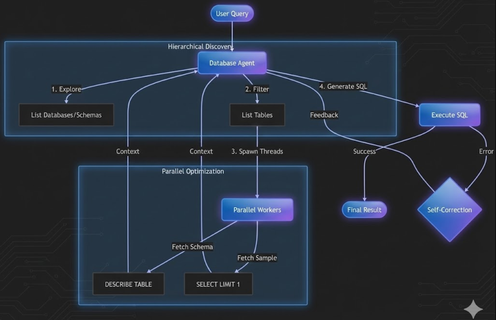
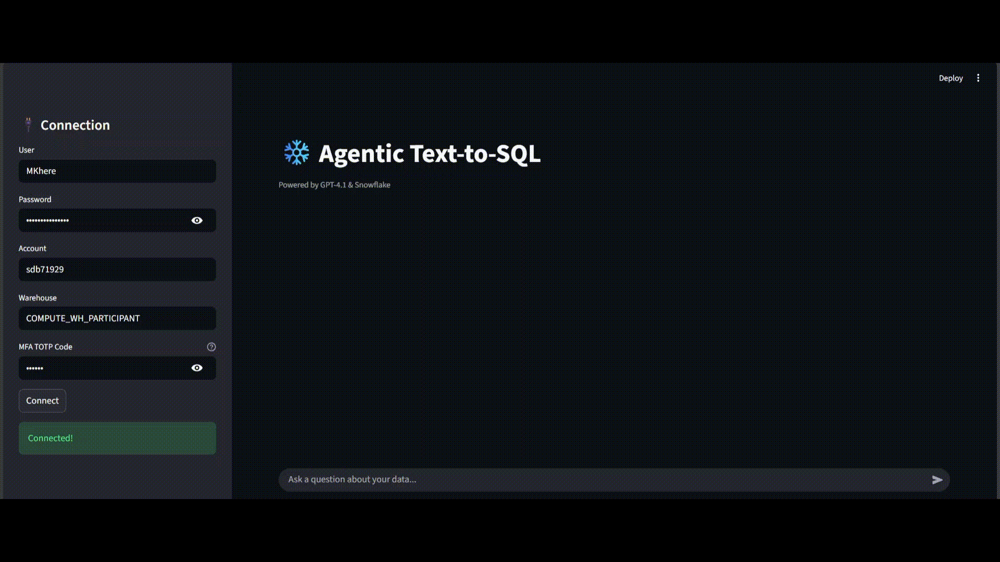

I spent this weekend building a text-to-SQL system that actually works. Not a demo that falls apart when you ask it something tricky — a real system that explores databases, fixes its own mistakes, and costs 85% less than the standard approach.
The spark was a recent paper on “Agentic NL2SQL” that claimed you could cut LLM token usage by 87% while keeping accuracy. The researchers tested on simulated enterprise databases. I wanted to see if that holds up on real cloud infrastructure with real constraints.
So I picked Snowflake (a data lake platform in practice), loaded the Spider 2.0 dataset with 100+ databases and thousands of tables, and started hacking. The catch? I was on Snowflake’s free tier with queued access, and the dataset had zero documentation. If the agentic approach works here, it works anywhere.
Image generated by author using AI
The Problem Everyone’s Ignoring
Most production text-to-SQL systems still follow the “Direct Solver” approach: dump the entire schema into a prompt and pray the LLM figures it out.
This works for small databases (10–20 tables). But beyond that, you hit a performance cliff:
- LLM reasoning degrades as prompt size grows.
- Beyond ~1,000 tokens, tabular reasoning starts to collapse.
- Enterprise lakes routinely require 50,000+ tokens just for metadata.
In the Datalake Agent paper, Direct Solver performance cracked at 159 tables and collapsed at 319. Flood the model with irrelevant metadata, and your signal gets drowned.
Why I Tried RAG First (And Why It Failed)
Problem 1: You’re Still Drowning in Context
Even if RAG retrieves the top 20 tables, you’re still stuffing 1,000+ columns into the prompt. You shrank the haystack — you didn’t solve it.
Problem 2: Schemas Don’t Embed Well
Table names like dim_cust_geo_v2 are meaningless until you inspect columns and sample data. Embeddings can’t recover structure without peeking.
Problem 3: Ambiguity Kills
A column called city could be a string, JSON, foreign key, or array. RAG makes the model guess the shape — and guesses fail.
Problem 4: No Descriptions = No Semantics
In real data lakes, tables are cryptic and undocumented. Semantic search becomes a coin flip.
What Actually Works: Hierarchical Discovery
Instead of dumping everything at once, an agent explores the lake like a human analyst:
- List databases
- Pick the most relevant one
- List schemas and tables
- Deep dive into 3–5 candidates
- Peek at sample rows before writing SQL
Traditional: Dump 3,000 tables → 50,000 tokens → Generate SQL → Cross fingers
Agentic: Discover hierarchically → ~650 tokens total → Generate SQL with evidence
Building the Snowflake Agent
Snowflake is a great stress test: case sensitivity, JSON columns, multi-schema layouts, and I was running on free tier queueing. If an agent survives this, it survives enterprise reality.
The Discovery Flow
- Step 1: Database discovery
- Step 2: Schema exploration
- Step 3: Table filtering
- Step 4: Deep dive with schema + sample rows

Agent explores databases in strict hierarchy
Demo (Real World)

Real world Demo
In the demo, I first asked for the number of databases and top 20 database details. Then I asked:
“Show me the list of airports from the city Moscow.”
The agent correctly navigated to the airlines database, made tool calls (list schema → list tables → get details with parallel peek → execute → self-heal), then returned the final answer.
The Critical Innovation: The Peek
For each table the agent selects, it fetches:
- Schema (columns + types)
- One sample row
That single row reveals the real structure. Example:
{"en": "St. Petersburg", "ru": "Санкт-Петербург"}
Without the peek, the model writes a naive filter and fails on JSON. With it, it uses PARSE_JSON(city):en::string and succeeds.
The Latency Problem (And How I Fixed It)
Querying INFORMATION_SCHEMA sequentially took 2+ minutes on free tier. So I parallelized schema+peek per table.
from concurrent.futures import ThreadPoolExecutor, as_completed
def get_table_details(database, schema, table_names):
def describe_and_peek(table_name):
results = []
desc_query = f"DESCRIBE TABLE {database}.{schema}.{table_name}"
desc_df = execute_query(desc_query)
results.append(f"=== {table_name} Schema ===")
results.append(desc_df.to_string())
try:
sample_query = f"SELECT * FROM {database}.{schema}.{table_name} LIMIT 1"
sample_df = execute_query(sample_query)
results.append("=== Sample Row ===")
results.append(sample_df.to_string())
except Exception as e:
results.append(f"Couldn't fetch sample: {str(e)}")
return "\n".join(results)
with ThreadPoolExecutor(max_workers=10) as executor:
futures = [executor.submit(describe_and_peek, t) for t in table_names]
return "\n\n".join([f.result() for f in as_completed(futures)])
Discovery time dropped from 120+ seconds to under 3 seconds.
Self‑Healing SQL
SQL is unforgiving. So instead of failing loudly, the agent retries with error-aware corrections:
def execute_with_retry(sql, max_attempts=3):
for attempt in range(max_attempts):
try:
return snowflake_client.execute_query(sql)
except Exception as error:
if attempt == max_attempts - 1:
return f"Failed after {max_attempts} attempts: {error}"
correction_prompt = f'''
Your SQL failed with this error:
{error}
Original SQL:
{sql}
Analyze the error and generate corrected SQL.
'''
sql = agent.generate_sql(correction_prompt)
What I Learned
Performance Numbers
- Average query time: 8–15 seconds (discovery + execution)
- Token reduction: ~85% vs full-schema prompting
- First-try success: 78%
- After self-correction: 94%
- Parallel speedup: ~40× metadata fetching
Why This Approach Wins
The future isn’t better retrieval — it’s better reasoning. Agentic exploration beats passive RAG for structured lakes at scale.
Pros & Cons
✓ Pros
- • Massive token savings in large lakes
- • Handles undocumented / cryptic schemas
- • “Peek” removes column ambiguity
- • Self-healing improves reliability
- • Parallel discovery makes it usable
✗ Cons
- • Requires tool access to metadata + samples
- • More moving parts than simple RAG bots
- • Needs guardrails to avoid exploration loops
Try It Yourself
Full source code and examples available on GitHub
Need Help Implementing This?
I offer consulting services for Text-to-SQL systems. Let's discuss your requirements.
Schedule a ConsultationReferences
- “Agentic NL2SQL to Reduce Computational Costs” — Jehle et al., NeurIPS 2025 (arXiv:2510.14808)